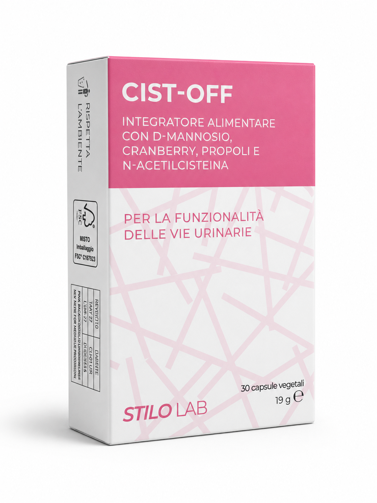
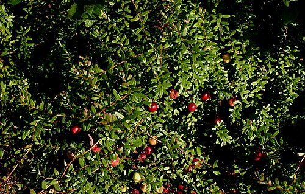
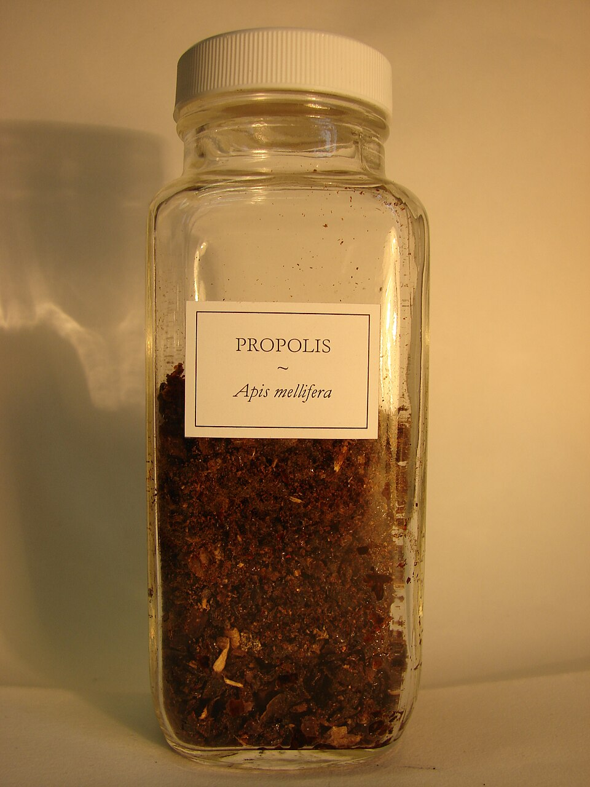
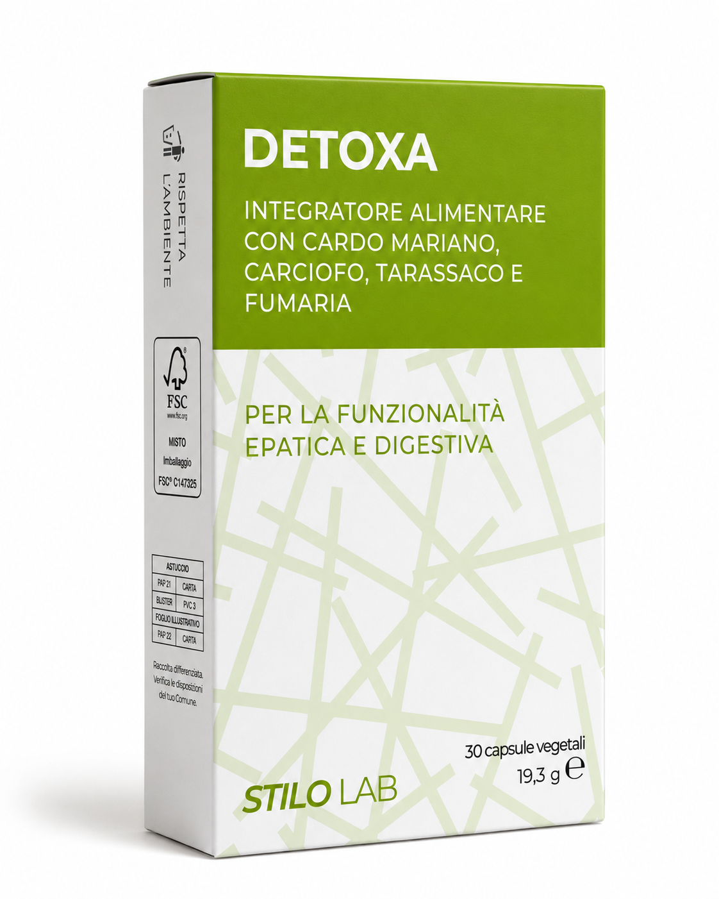
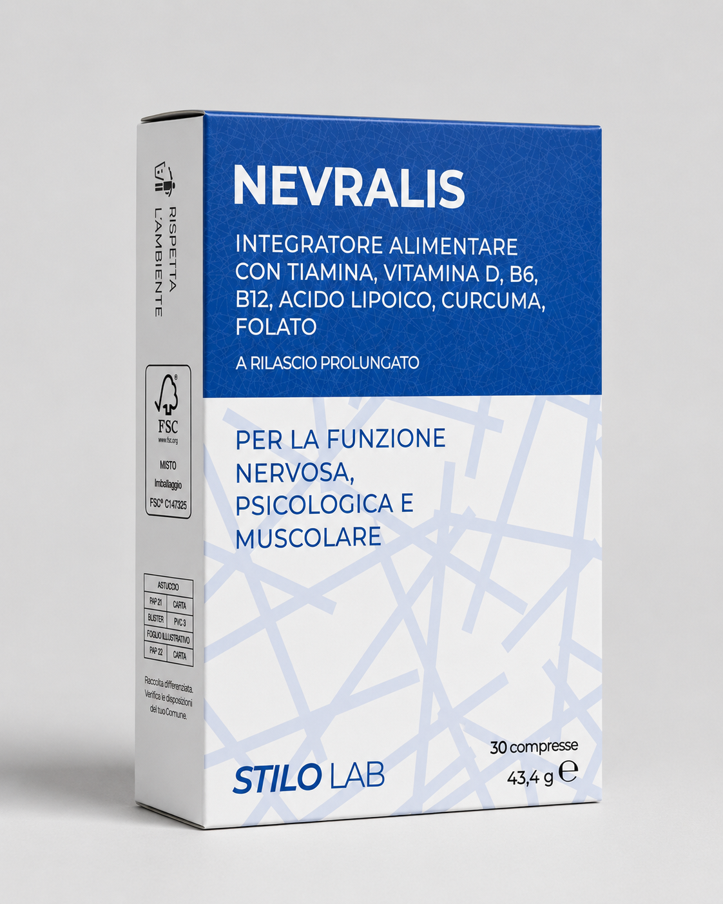
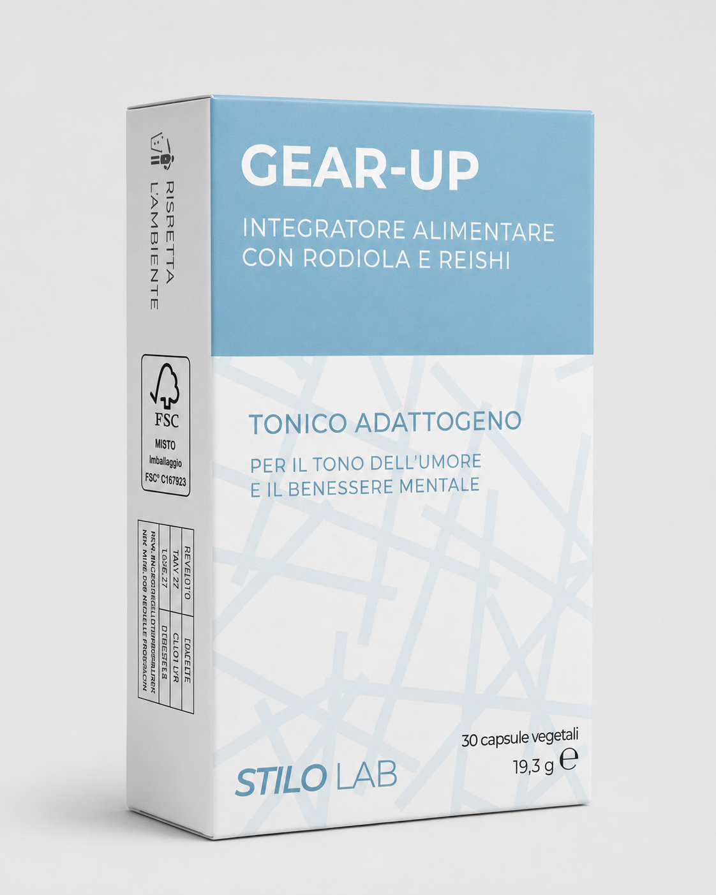

Cist-off
For urinary tract function
DrainageUrinary wellbeingProtection
CIST-OFF is a supplement formulated to support urinary tract function and the physiological balance of the urinary system, through the synergistic combination of D-mannose, cranberry assayed for proanthocyanidins (PACs), N-acetylcysteine and propolis standardised for galangin. The formulation brings together ingredients selected to act on complementary aspects of urinary physiology, pairing components traditionally used for urinary wellbeing with innovative ingredients such as N-acetylcysteine.
What it supports
- Supports urinary tract function
- Supports the drainage of body fluids
- Supports the physiological balance of the urinary environment
- Supports the body's natural antioxidant defences
- Contributes to the general wellbeing of the urinary system
Key ingredients
D-mannose
A simple sugar naturally present in some plant species, birch among them. It is traditionally used to support urinary tract function and is studied for its role in bacterial adhesion mechanisms, particularly with regard to Escherichia coli.

Cranberry
Fruit d.e. assayed at 25% proanthocyanidins (PACs), the most studied bioactive fraction of cranberry: standardised PACs guarantee a controlled intake of the extract's main characterising compounds. It supports urinary tract function and the drainage of body fluids.
N-acetylcysteine (NAC)
A derivative of cysteine and a precursor of glutathione, one of the body's main antioxidant systems. Its presence in the formulation is aimed at supporting natural antioxidant defences, and it is the subject of studies in the field of biofilm-related processes.

Propolis
Resin d.e. assayed at 12% galangin, a plant extract rich in phenolic compounds and flavonoids. Standardisation for galangin guarantees a consistent intake of one of propolis's main bioactive components.
Why this combination?
A formulation built on synergy
CIST-OFF is not merely a pairing of ingredients traditionally used for urinary wellbeing: each component was selected to contribute to an integrated, complementary approach.
- D-mannosesupport for the physiological mechanisms linked to bacterial adhesion
- Cranberry assayed for PACsan intake of standardised proanthocyanidins, the characterising fraction of cranberry
- NACsupport for endogenous antioxidant systems, studied in biofilm-related processes
- Propoliss standardised for galanginan intake of bioactive phenolic compounds and flavonoids
The formulation was developed by pharmacists with an approach based on synergy between the actives, favouring standardised extracts, declared assays and high-quality raw materials.
Typical content
| Component | 1 capsule | Max dose (6 caps) |
|---|---|---|
| D-mannose | 200 mg | 1200 mg |
| Cranberry d.e. | 150 mg | 900 mg |
| of which proanthocyanidins | 37,5 mg | 225 mg |
| N-acetylcysteine | 100 mg | 600 mg |
| Propoliss d.e. | 50 mg | 300 mg |
| of which galangin | 6 mg | 36 mg |
Typical content per daily dose.
How to use
Take the capsules with water. Taking them on an emptied bladder, preferably after urinating, is recommended to favour the presence of the actives in the urinary environment; keeping well hydrated through the day is advised. Maintenance dose: 1 capsule a day. Intensive dose: up to 6 capsules a day, as needed and following the directions on the label.
Label information ingredients · warnings · storage
Ingredients
D-mannose; Cranberry (Vaccinium macrocarpon Aiton) fruit d.e. assayed at 25% proanthocyanidins; N-acetylcysteine; Coating agent (capsule shell): cellulose; Propoliss resin d.e. assayed at 12% galangin; Anti-caking agents: silicon dioxide, fatty acids, magnesium salts of fatty acids. Gluten free · Lactose free · Vegetable capsule, suitable for vegetarians.
Warnings
Do not exceed the recommended daily dose. Keep out of reach of children under 3 years of age. Food supplements are not intended as a substitute for a varied, balanced diet and a healthy lifestyle. Do not give to children under three years of age. Because it contains propolis, the product is not advised in case of hypersensitivity to bee products. During pregnancy and breastfeeding, seek the advice of your pharmacist or doctor.
Storage
Store tightly closed in a cool, dry place, away from direct sunlight and heat sources. The expiry date refers to the product correctly stored in an intact pack.
The other Stilo Lab formulas



33 g